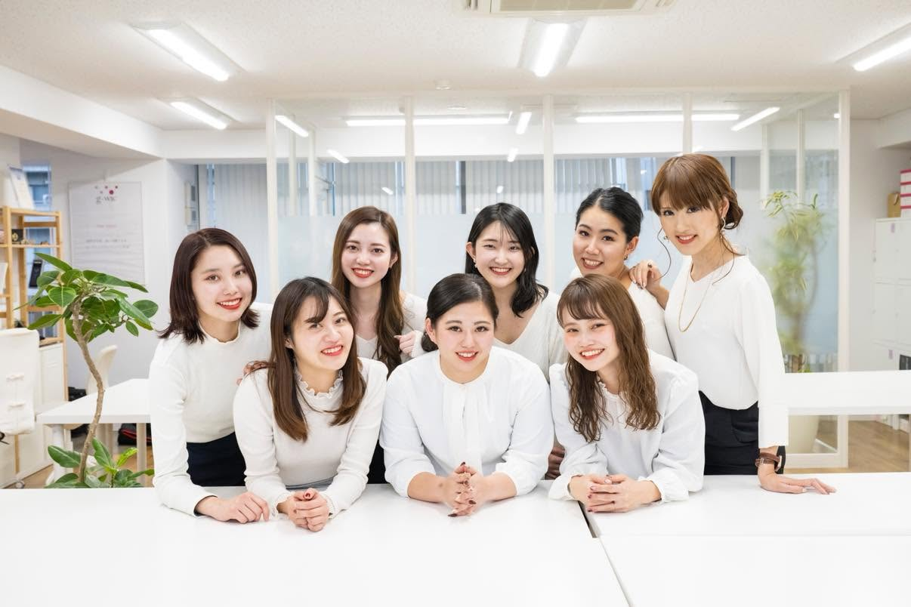
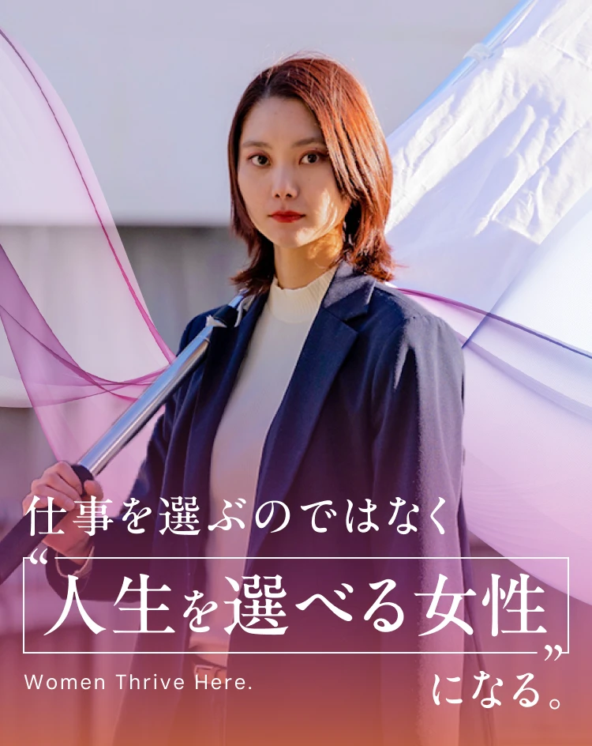
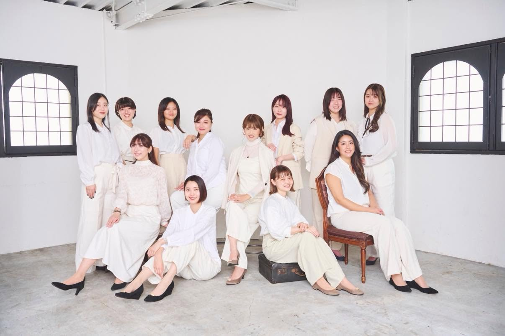
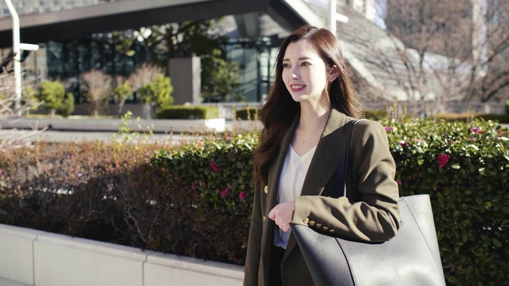
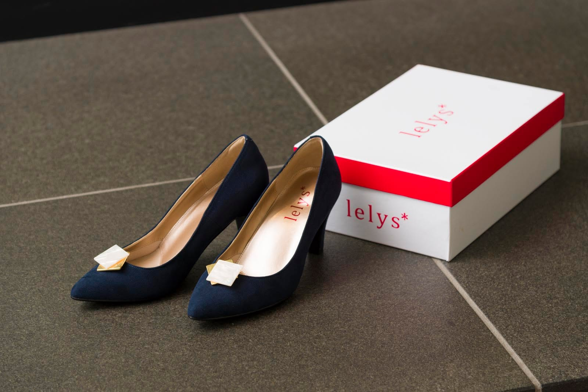
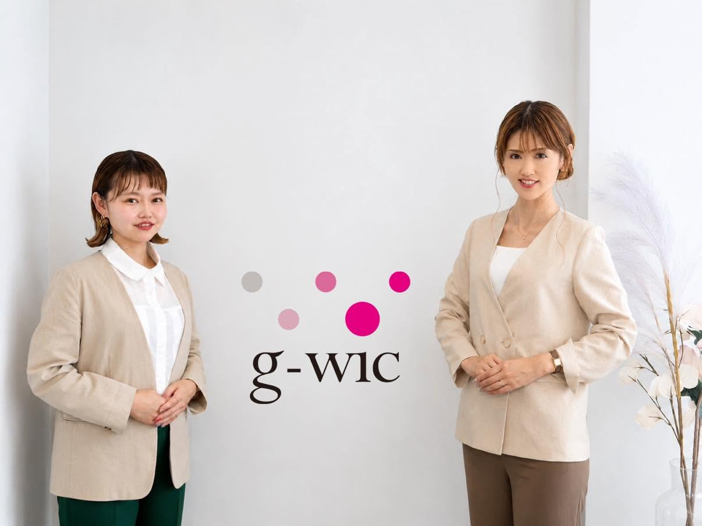
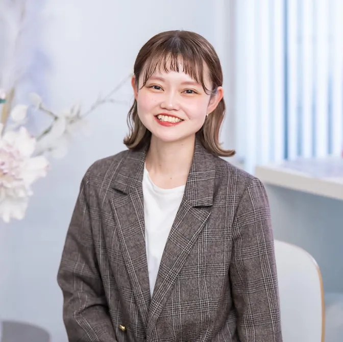
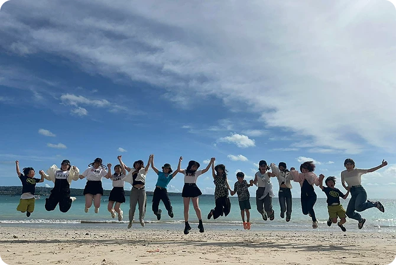

20代女性アパレル経験者
営業職 積極採用中!
※アパレル以外の方のご応募も歓迎しています。

女性が活躍する営業支援
g-wicの目指す未来
ggenerator of
wwomen’s
iinnovation &
ccreativity
- 革新的かつ創造的な女性を生み出す
私たちg-wicは、「女性が生涯、真に活躍できるリーディングカンパニーとなる」というビジョンを掲げています。
それは、誰かに依存することなくライフイベントによってキャリアを諦めることもなく、経済的にも、精神的にも自立した女性が、自分の人生を、自分で選択できる社会をつくること。
そのためにg-wicは、「ただ働く場所」ではなく、一生通用するスキルと自信を身につけられる環境を提供しています。
また、代表自身も2児の母として子育てと仕事を両立しながら、女性起業家としてこのビジョンを体現し続けています。
g-wicは、女性が“働き続けられる”のではなく、“選び続けられる”人生をつくるための会社です。
Service
g-wicの事業内容
-
Service01
女性による営業支援
企業の新規開拓営業を戦略的にサポート。女性ならではの傾聴力や寄り添うコミュニケーションで、クライアントのニーズを引き出し、事業成長へ導きます。
-
Service02
展示会営業支援
展示会での名刺交換から見込み顧客へのアプローチ、アポイント獲得、商談までを一気通貫で支援します。
-
Service03
交流会出席代行
交流会でターゲット企業との接点を創出し、継続的な関係構築をサポートします。丁寧なヒアリングを通じて信頼関係を築き、商談につながる機会を創出します。
-
Service04
働く女性の靴ブランド「lelys」
働く女性がもっと自分らしく輝けるよう、歩きやすさとデザイン性を両立した靴ブランドを展開しています。


Job Category
募集職種
20代女性アパレル接客経験者
積極採用中!
※アパレル以外の方のご応募も歓迎しています。
Reason
アパレル経験者を
積極採用する理由
アパレル経験で身に付いた力
相手のニーズを
汲み取る力
信頼関係を築く対話力
数字（売上）と
向き合ってきた経験
断られても前向きに
改善する姿勢
Top Introduce
女性が生涯、真に活躍できる
リーディングカンパニーとなる
豊島 愛華
/ Aika Toyoshima
株式会社g-wic 代表取締役
経 歴 /
通信系営業会社にて営業職を経験後、女性による営業支援チームを立ち上げる。
2011年、26歳で株式会社g-wicを設立。
「女性が生涯、真に活躍できる社会をつくる」をビジョンに、全員女性の営業支援会社として、企業の新規開拓・営業組織支援を行っている。
現在は、2児の母として子育てをしながら、自らもライフイベントとキャリアを両立する働き方を実践している。

Salary System
社員が喜ぶ昇給制度
目標数字を達成
グレード昇給部下1人以上達成
5〜30万円/月3年勤務継続の
場合1万円/月
子育てしている
場合3万円/月
評価基準
g-wicの人事評価基準は、売上や利益といった定量評価と、考え方・熱意・能力・役割といった定性評価の両面で評価しています。
社内の評価基準はG1からG7までの等級制度を設けており、G7は新規事業を任せられるレベルのメンバーです。
Career Flow
営業未経験から、市場価値を
高めるキャリアへ
-
1週目
座学／営業基礎／
業界理解ビジネスマナーや営業の基本、クライアント業界の知識を学びます。
先輩社員が作成したIT用語テストにも挑戦。 -
1ヶ月目
先輩同行／
ロープレ中心先輩の商談に同行し、現場の空気を体感。毎日のロープレで話し方やヒアリング力を磨いていきます。
-
7ヶ月目
一部案件を単独対応
徐々に一人で案件を担当し、主体的に営業活動を進められるようになります。困ったときはすぐに相談できる環境なので、安心してチャレンジできます。
Schedule
1日のスケジュール
-
09:30
朝礼
1日の始まりは朝礼から。メンバー全員で稼働報告や情報共有を行い、チーム全体で目線を合わせながら業務をスタートします。
-
09:50
スケジュール・メール確認
タスクの確認とメールのチェックを行います。今後の提案のヒントになるようなニュースのチェックも欠かせません。
-
10:00
テレマーケティング
作成したリストに基づいてテレマーケティングを行い、アポイントを獲得します。トークの内容やお客様の反応を記録し共有することで、ブラッシュアップしていきます。
-
12:00
ランチ
メンバーとランチタイム。g-wicはメンバー同士仲が良く、会話に花が咲きます。オフィス周辺の美味しいお店を探すのも1つの楽しみです。
-
13:00
商 談
午後は商談へ。最近はオンラインでの提案も増えてきました。緊張感はありますが、さまざまな業界の方とお話しする中で、新しい視点や考え方に触れられることが多く、日々刺激を受けています。
-
18:00
社内ミーティング
クライアント様の来期施策提案に向けたミーティングを行います。チーム一丸となってお客様のニーズを見極め、営業戦略を練ります。
-
18:30
帰 宅
TO DOリストを作成し、明日の業務準備を終えたら本日の業務は終了です！
帰宅後はリフレッシュの時間を大切にしながら、営業スキルを磨くためのインプットや情報収集を行うメンバーも多く、それぞれが日々成長に向き合っています。
Employee interview
社員インタビュー

取締役
西本 愛海
/ Manami Nishimoto
現在どのような仕事をしていますか？
クライアント様の営業支援から、自社の新規開拓、メンバーのマネジメント、そして採用などの人事サポート…
クライアント様の営業支援から、自社の新規開拓、メンバーのマネジメント、そして採用などの人事サポートまで、幅広い業務に携わっています。
営業支援では、一部のクライアント様と二人三脚で目標達成に向けて伴走することもあれば、プロジェクトマネージャーとして複数案件を統括し、メンバーと共に「どうすればお客様に喜んでいただけるか」を日々考えながら取り組んでいます。
また、人事面では、g-wicの未来を一緒に創っていく仲間を増やすため、採用チームのサポートにも力を入れています。
g-wicに入社した理由を教えてください。
理由は大きく2つあります。
1つ目は、どんな場所でも通用する「自分の市場価値」を高めたかったから。
g-wicなら、形のあるもの・ないもの問わず、あらゆる業界のトップの方々と対等にお話しできるスキルが身につくと感じたんです。
2つ目は、ビジョンへの強い共感です。
私の周りには、経済的な理由で選択肢を狭めてしまっている女性が少なくありませんでした。
だからこそ、「女性が自立し、自分の人生を自分の意志で選択できる世の中にしたい」という想いに突き動かされて入社を決めました。
西本さんにとって仕事のやりがいとは？
メンバーと会社が、目に見えて成長していく姿を特等席で見守れることです！
g-wicのメンバーは、経歴も性格も十人十色ですが、みんな根っこの「想い」が本当に素敵なんです。
私が伝えたアドバイスを素直に吸収し、それをお客様への成果に繋げて笑顔を見せてくれた時は、自分のこと以上に嬉しいですね。
今の規模感だからこそ、一人ひとりの頑張りがダイレクトに会社の成長に繋がる。
そのワクワク感が毎日の原動力です。
自立した“女性”になるために一番大事だと思うことは？
「キャリアとライフプランの両方を見据えた、自分なりのビジョン」を持ち、逆算して行動することだと考えております。
女性はどうしても、結婚や出産などのライフイベントで働き方が変化するタイミングがあります。
私自身、その変化が来る前に、営業としてだけでなくマネジメント領域まで一歩踏み込んで経験できたことが、今の大きな支えになっています。
「当時、本気で挑戦しきれた」という経験の積み重ねが、今の自分の自信に繋がっています。
理想の未来から逆算して、今の自分にできることを一つひとつクリアしていく。
その努力の先に、経済的にも精神的にも自由な、本当の意味で自立した女性としての道が開けるのだと考えています。
社内イベントで特に印象に残っていることは何ですか？
お花見やクリスマス会など、季節ごとのイベントはいつも全力で楽しんでいますが……やっぱり一番は「沖縄の社員旅行」ですね！
3日間寝食を共にすると、仕事中には見えないメンバーの意外な一面やプライベートな悩みも共有できて、絆がグッと深まる感じがします。
「この最高の仲間たちと一緒に働けて幸せだな〜！」と、心から実感できる大切な時間でした。
最近は子供が小さいのでお休みしていますが、大きくなったらまたみんなと一緒に旅をするのが、今の密かな楽しみです。
g-wicに入って変わったことはありますか？
プライベートでも、人の素敵なところを見つけて「褒める」ことが自然と増えました！
g-wicには、朝礼でメンバーの良かったところをシェアする「賞賛文化」が当たり前にあるんです。
契約といった大きな成果だけでなく、「誰かのために動いた小さな気遣い」まで、誰かが必ず見ていてくれる。そんな温かい環境にいるうちに、気づけば無意識に周りの人を褒める習慣が身についていました。
営業職を目指す女性に向けてメッセージをお願いします。
「営業って大変そう……」というイメージがあるかもしれません。
でも、経済的な自立を目指す女性にとって、これほど魅力的な職種はないと思っています！
もちろん、壁にぶつかる日もあります。
でも、お客様からの「ありがとう」という言葉や、自身の成長を感じる喜びは、何にも代えがたいものですし、この経験が自身の自立にも繋がっていると感じております。
営業で培われるコミュニケーション力は、仕事だけでなく、友人やパートナーとの関係を築く上でも、とても役に立っています！
営業は、人生を豊かにしてくれて、AIに取って代わられない素敵な仕事です。
ぜひ一緒に挑戦してみましょう！
g-wicではそんな方を全力でサポートします！！
部長
雁谷 萌
/ Moe Kariya
現在どのような仕事をしていますか？
現在は、自社の新規顧客開拓を行いながら、チームマネジメントにも携わっています。新規案件の営業活動で…
現在は、自社の新規顧客開拓を行いながら、チームマネジメントにも携わっています。
新規案件の営業活動では、市場ニーズを踏まえた提案から受注までを一貫して担当しています。
また、クライアント案件の営業にも関わり、クライアント様の商材やサービスへの理解を深めたうえで、エンドユーザー様の課題に寄り添った提案を行うことを大切にしております。
社内ではメンバーのマネジメントにも従事し、個人の成果だけでなく、チーム全体で成果を最大化できる体制づくりを意識して取り組んでいます。
g-wicに入社した理由を教えてください。
g-wicに入社した理由は、一言でいうと「母を超えたい！」と思ったからです。
具体的には、経済的にも精神的にも自立し、自分の人生を主体的に選択できる人になりたいという想いと、g-wicのビジョンが一致したからです。
共働き家庭で育ち、母は自身で会社を経営しておりました。
母が、会社で働く社員の方々に多くの選択肢を与えながら、いきいきと活躍する姿に影響を受け、尊敬する母を超えたいという想いと、自身の力で価値を生み出せるビジネスパーソンになりたいと考え、入社を決めました。
雁谷さんにとって仕事のやりがいとは？
業務を通じて多面的な成長を実感できることです！
メンバーの成長に関われた瞬間にはマネジメントの意義を感じ、クライアントから信頼を得られたときには自身の提供価値を実感します。
また、上司から大きな裁量を任せていただける環境や、信頼を持って仕事を任せていただけることが、自身の成長実感や大きなモチベーションに繋がっています。
自立した女性”になるために一番大事だと思うことは？
自分の人生を自分で選択しているという意識を持つことだと思います！
仕事・家庭・ライフイベントなど、状況は変化していきますが、その中で「どう在りたいか」を自分で考え、主体的に選び続けることが自立に繋がると思います。
社内イベントで特に印象に残っていることは何ですか？
年に一度実施する合宿です！
まず始めに事業計画が共有されるので、経営の視点を学べるだけでなく、自分自身の視野も広がります。
また、個人のビジョンをみんなで共有する場もあり、夢や目標への意識が高まると同時に、メンバー一人ひとりの想いに触れられる素敵な時間です。
さらに、昇格者の発表では部下の成長を実感でき、思わず嬉しくなって涙することもあります。
真剣に未来について考える時間だけでなく、翌日にはカレー作りやサバゲーなど、メンバー同士で交流を深められる時間もあり、普段は見えない一面を知れるのも魅力の一つです。
こうした経験を通して、チームとしても自分自身としても成長を感じられる、私にとって本当に意義のある行事です。
g-wicに入って変わったことはありますか？
営業としての成果を上げる価値と、メンバーを成長させる喜びの両方を実感できるようになったことです。
今、マネジメントにやりがいを感じられているのも、g-wicで出会ったメンバーや経験のおかげだと思っています。
営業職を目指す女性に向けてメッセージをお願いします。
営業ってネガティブなイメージがありますよね。
私も、絶対やりたくない仕事でした！笑
でも今は、心からオススメできる仕事になりました。
営業は、たくさんの経験を通して人として大きく成長できる職種ですし、その成長が結果として経済力にも繋がっていく仕事だと感じています。
だからこそ、自分の可能性を広げたい方や、市場価値を高めたい方には、ぜひ挑戦してみてほしいと思っています。
主任
嵯峨座 維
/ Yui Sagaza
現在どのような仕事をしていますか？
現在は、クライアント様の営業支援と、自社の新規開拓をメインに担当しています。…
現在は、クライアント様の営業支援と、自社の新規開拓をメインに担当しています。
営業支援では、営業に課題をお持ちの企業様や事業拡大を目指す企業様に対して、ヒアリングを軸にした新規開拓をサポートしています。
課題やターゲットをすり合わせながら、アプローチの設計から実行、改善までを伴走するイメージです。
また展示会支援では、クライアント様のブースに立ち、社員の一員として来場者対応や商談のきっかけづくりなど、現場での営業活動も行っています。
g-wicに入社した理由を教えてください。
g-wicに入社した理由は、大きく2つあります。
1つ目は、「働く女性のロールモデルとして第一線で活躍したい」という想いを、理想で終わらせず自分のキャリアで証明したいと考えたからです。
学生時代から日本のジェンダーギャップの課題に違和感を持っていましたが、問題提起だけでは何も変わらない現実も感じていました。
だからこそ、環境が整うのを待つのではなく、成果と専門性で信頼を勝ち取り、経済的にも精神的にも自立した働き方を実現したいと思うようになり、g-wicのビジョンは、その想いを“行動”に変えられる土台があると感じました。
2つ目は、メンバーがビジョンを言葉ではなく振る舞いで体現していたからです。
年齢や役職に関係なく協力し合い、クライアントの成功に本気で向き合う姿勢に触れ、「私もこの環境で実力をつけ、結果で価値を示したい」と強く感じました。
嵯峨座さんにとって仕事のやりがいとは？
仕事のやりがいは、クライアント様に価値貢献できたと実感できた瞬間です。
ご支援を進める中で、「助かりました」「お願いしてよかったです」といったお言葉をいただけると、自分の仕事がしっかり役に立てていることを実感でき、とても嬉しく感じます。
単にご依頼いただいた業務をこなすのではなく、状況に合わせて提案や改善を重ねながら、サービスにプラスαの付加価値を届けられたと感じられる瞬間に、特にやりがいを感じます。
営業職を経験していて、やっていて良かったと感じる瞬間はどんな時ですか？
営業職を経験して、「やっていて良かった」と感じる瞬間は、自分自身の成長と、目の前のお客様へ直接価値提供できている実感を得られたときです。
営業は、数字をもとに状況を整理し、仮説を立てながら改善していく機会が多いため、分析力や柔軟な考え方が身についたと感じています。
うまくいかなかった時も、原因を分解して次の一手を考える習慣がつき、少しずつ再現性のある動きができるようになりました。
また、提案や商材を通じてクライアント様の課題解決に繋がり、「ありがとう」「助かりました」と直接お言葉をいただけることも、営業ならではの大きな魅力だと感じています。
社内イベントで特に印象に残っていることは何ですか？
社内イベントで特に印象に残っているのは、毎年開催しているBBQです。
普段あまり関わる機会が多くないメンバーとも自然に会話ができたり、メンバーのご家族も参加されるので、仕事中とはまた違った一面を知れる貴重な機会だと感じています！
また、BBQ以外にも毎月メンバーのお誕生日をお祝いする文化があり、普段からメンバー同士の距離が近く、温かい雰囲気があるところもg-wicの魅力だと思います。
困った時には相談しやすく、チームで支え合いながら前向きに頑張れる環境だと感じています。
g-wicに入って変わったことはありますか？
以前よりも、相手の想いや背景を汲み取る力が身についたと感じています。
g-wicの仕事はヒアリングを軸に進めることが多く、表面的な要望だけでなく、「本当は何に困っているのか」「何がネックになっているのか」を丁寧に引き出す機会が増えました。
相手の立場や背景を想像しながら会話を組み立てることで、ただ話を合わせるのではなく、相手に寄り添った提案やコミュニケーションができるようになったと思います。
営業職を目指す女性に向けてメッセージをお願いします。
営業は、自分自身の成長を一番実感しやすい仕事だと感じています！
相手に合わせて考え方や伝え方を工夫したり、数字をもとに改善を重ねたりと、日々さまざまな経験を積めるので、自分の可能性がどんどん広がっていく感覚があります。
また、少しずつでも「できること」が増えていく実感を持てるのも、営業ならではの魅力だと思います。
経験を積むほど自信にも繋がっていくので、「成長したい」「市場価値を高めたい」と考えている方には、ぜひ挑戦してみてほしいです。
Job information
求人情報
20代女性アパレル経験者
営業職 積極採用中!
※アパレル以外の方のご応募も歓迎しています。
職種
セールス職
セールスコンサルタント職
マーケティングコンサルタント職
雇用形態
正社員、アルバイト、パート、業務委託
※勤務形態問わず
月給
新卒：月給250,000円
中途：月給250,000円～350,000円
※経験、能力等を考慮の上で決定します。
新卒：月給250,000円
中途：月給250,000円～350,000円
※経験、能力等を考慮の上で決定します。
※正社員初任給25万円、法人営業経験2年以上は27万円～（都度昇給アリ）
※業務委託の場合は要相談
試用期間
3ヶ月（給与は本採用時と同額）
インセンティブ・表彰
・半期ごとの表彰制度有
・インセンティブ制度有
手当
・通勤手当（交通費支給）
・成果に応じたインセンティブ制度あり
・通勤手当（交通費支給）
・成果に応じたインセンティブ制度あり
・役職手当
・ランチ補助
・子育て支援手当
賞与・昇給
「育てること」も、評価される。
部下1名の目標達成ごとに、月5万円昇給。
✔後輩を育てても、自分の評価には返ってこない。
✔頑張りが「数字」だけでしか見られない。
「育てること」も、評価される。
部下1名の目標達成ごとに、月5万円昇給。
✔後輩を育てても、自分の評価には返ってこない。
✔頑張りが「数字」だけでしか見られない。
そんなふうに感じたこと、ありませんか?
＼ここがポイント／
‥‥‥‥‥‥‥‥‥‥‥‥‥‥‥‥‥‥‥‥‥‥‥
■ 成果だけでなく、「育成」も評価される仕組み
‥‥‥‥‥‥‥‥‥‥‥‥‥‥‥‥‥‥‥‥‥‥‥
部下が目標達成（役職によってはそれ以上）するごとに、
基本給がグレード昇給
「女性だから昇進できない」はありません。
g-wicの評価は、“自分だけが成果を出す人”ではなく、
“周りを育て、チームで成果をつくれる人”がしっかり報われる仕組みです。
一般的な会社では、どれだけ後輩に教えても、支えても、
評価にはつながらないことも少なくありません。
g-wicでは、そこを明確に評価対象にしています。
■ 昇給の仕組み（一部抜粋）
① 目標数字を達成
→ グレード昇給（基本給UP）
② 部下の育成・達成
→ 部下1名の達成ごとに月5万円昇給
※部下への数字配分も可能なため、チームで達成しやすい設計になっています。
■ チームで成果をつくるから、評価される
g-wicは、“個人プレーで終わる組織”ではありません。
部下の育成やサポートも、明確に評価対象になります。
だからこそ、「教えても評価されない」ではなく、「育てるほど自分の評価も上がる」環境です。
■ 子育て支援制度
ライフステージが変わっても、安心して働き続けられるよう、子育てとの両立を支援する制度も整えています。
・月額手当の支給
・ベビーシッター費用の補助 など
一人ひとりの状況に合わせて、柔軟に選択できる仕組みです。
■ 賞与について
賞与は年1～2回（業績による）。
会社の成長は、メンバーにしっかり還元していきます。
年収モデル（年収例)
1年目／360万円
2年目／420万円
3年目／560万円
勤務地・アクセス
・東京支店
〒150-0002
東京都渋谷区渋谷2-9-9 SANWA青山bldg 5階
・東京支店
〒150-0002
東京都渋谷区渋谷2-9-9 SANWA青山bldg 5階
〒150-0002
東京都渋谷区渋谷2-9-9 SANWA青山bldg 5階
- 東京メトロ半蔵門線、副都心線、東急田園都市線「渋谷」駅 出口15より徒歩6分
- JR線、東京メトロ銀座線、京王井の頭線、東急東横線「渋谷」駅 東口より徒歩7分
・大阪支店
〒542-0076 大阪府大阪市中央区難波4-1-15 近鉄難波ビル 2F
〒542-0076 大阪府大阪市中央区難波4-1-15 近鉄難波ビル 2F
- 近鉄・阪神「大阪難波」駅、地下鉄「なんば」駅 21番出口 徒歩1分
仕事内容
「売りこむ営業」ではなく、
企業の成長を支える営業支援の仕事です。
私たちは、単に商品を売る営業ではありません。
「売りこむ営業」ではなく、
企業の成長を支える営業支援の仕事です。
私たちは、単に商品を売る営業ではありません。
クライアントの営業活動を支え、成果が出る仕組みをつくる仕事です。
表面的に提案するのではなく、まずは相手の課題を深く理解することから始まります。
「何に困っているのか」
「どんな会社と出会いたいのか」
「本当はどこに課題があるのか」
その本音を引き出すことが、私たちの役割です。
---
具体的にはこんな仕事です
■ 新規開拓の営業支援（BtoB）
中小企業を中心に、新規開拓営業を支援します。
電話や訪問を通じて、クライアントに代わり企業様へアプローチし、ニーズを丁寧にヒアリング。
大切なのは「話す力」よりも「聞く力」。
言葉のニュアンスや反応の違和感から、本質的な課題を見つけていきます。
■ 展示会での営業サポート
展示会は、企業にとって大きな出会いの場。
名刺交換で終わらせるのではなく、その後のアポイント創出や商談につながるフォローまで一貫して支援します。
“その場限り”で終わらせない営業を、裏側から支える仕事です。
■ 交流会の出席代行
ビジネス交流会に参加し、企業同士をつなぐ役割も担います。
ヒアリングを通じて関係性を築き、潜在顧客を見込み顧客へと引き上げていく。
人と人の間に立ち、価値ある出会いを生み出す仕事です。
クライアントについて
業界はさまざまです。
・WEB制作会社
・化粧品会社
・システム開発会社
・食品卸会社
・出版社 など
中小企業から一部上場企業まで、幅広い企業様とお取引があります。
案件ごとに異なる業界に触れるため、営業スキルだけでなく、ビジネス全体への理解も自然と身についていきます。
向いているのはこんな人
✔ 人の話を聞くのが好き
✔ 空気を読むのが得意と言われる
✔ チームで目標を追うことにやりがいを感じる
✔ 一方的に売り込む営業に違和感がある
営業経験は問いません。
「売る力」ではなく、「汲み取る力」を評価しています。
働く女性向けブランド「lelys」も展開
自社ブランド「lelys」では、働く女性のための靴を開発・販売しています。
“現場で働く女性の声”をもとにした、
リアルな課題解決型のものづくりです。
営業支援だけでなく、女性が長く活躍できる環境づくりにも本気で取り組んでいます。
勤務時間
9時30分～18時30分 休憩12時～13時
福利厚生・社内制度

g-wicでは、ライフステージが変わっても、
安心して働き続けられる環境づくりを大切にしています。
g-wicでは、ライフステージが変わっても、
安心して働き続けられる環境づくりを大切にしています。
■ 社員旅行
役職者やMVPメンバーには、ハワイやバリなどへの社員旅行の機会があります。
日々の積み重ねや成果を、しっかりと還元していく文化です。
■ 柔軟な働き方
お子さんの体調不良など、急な予定変更が必要な場合は、在宅勤務へ切り替えるなど柔軟に対応しています。
無理をするのではなく、状況に合わせて働き方を調整できる環境です。
■ コンディションを整えるサポート
グルテンフリーのパンや軽食を特別価格で購入できる制度や、水素水の無料提供など、日々のコンディションを整える取り組みも行っています。
■ 健康面のサポート
身体の状態を可視化できるボディレポート制度を導入し、専門スタッフから食生活や健康面のアドバイスを受けることも可能です。
■ チームのつながり
年に一度の全社合宿では、ビジョンや戦略の共有に加え、アクティビティを通じてチームの結束を深めています。
そのほかにも、季節ごとのイベントや社内交流の機会を大切にし、メンバー同士のつながりを育む文化があります。
休日・休暇
完全週休2日制（土、日曜）、祝日、年末年始休暇、夏季休暇、GW休暇、有給休暇、慶弔休暇、育休・産休実績あり
応募条件
私たちが一緒に働きたいと思うのは、こんな方です。
特別な経歴や、目立つ実績がある必要はありません。
私たちが一緒に働きたいと思うのは、こんな方です。
特別な経歴や、
目立つ実績がある必要はありません。
私たちが見ているのは、「これまでどう人と向き合ってきたか」です。
■ 評価しているのは、こんなスタンスです
・相手の話を最後まで丁寧に聞けること
・途中で投げずにやり切ってきた経験があること
スキルよりも、
これまでの“向き合い方”を大切にしています。
■ いわゆる営業経験者である必要はありません。
「営業やってました」じゃなくて大丈夫です。
・接客や販売でお客様と向き合ってきた経験
・アルバイトや仕事で目標を追ってきた経験
・部活や仕事でコツコツ努力を続けてきた経験
・気づけば周りを支える役割になっていた経験
そうした積み重ねは、そのまま強みとして発揮できます。
■ こんな違和感を持ったことがある方へ
・一方的に売り込む営業に、しっくりこなかった
・数字だけを追うことに、意味を感じられなかった
・もっと相手に合った提案がしたいと思っていた
・頑張りをきちんと見てもらえる環境で働きたい
もし少しでも心当たりがあれば、
この環境はきっとフィットすると思います。
■ 私たちが大切にしていること
・目標に対して粘り強く向き合えること
・変化を前向きに楽しめること
・チームで成果をつくろうとする姿勢
“できるかどうか”よりも、“どう向き合うか”を大切にしています。
職場の雰囲気
支え合いながら、成果をつくるチームです
20代〜30代の女性メンバーが中心ですが、いわゆる“成果至上主義の営業会社”ではありません。
支え合いながら、成果をつくるチームです
20代〜30代の女性メンバーが中心ですが、いわゆる“成果至上主義の営業会社”ではありません。
数字で競い合うというより、「どうすればうまくいくか」を
チームで考える空気感があります。
「この業界、最近こういう傾向らしいです」
「このトークのほうが反応よかったです」
そんな会話が、日常的に交わされています。
先輩後輩の距離は、近めです
厳しい上下関係というより、自然と相談し合える関係性です。
困っていれば誰かが声をかけ、うまくいけば一緒に喜ぶ。
一人で抱え込むことはありません。
分からないこともそのままにせず、周りと一緒に解決していける環境です。
オンとオフは、しっかり分けています
仕事中は真剣に向き合い、休憩中はよく笑う。
メリハリがあるからこそ、長く続けられる環境です。
残業も、ダラダラ続ける文化はありません。
やるときはやる、帰るときは帰る。
面接から、雰囲気は変わりません
堅苦しい面接ではなく、「これまで何に向き合ってきたか」「これからどうなりたいか」をフラットにお話しする時間です。
入社後もその距離感は変わらないため、“思っていた会社と違う”というギャップは少ないと思います。
会社の雰囲気がわかる動画
https://youtu.be/Z_CL75LbAt4?si=X8N5kFy1MoylSaBF
https://www.youtube.com/watch?v=fHkjN3RNYWs
https://youtu.be/J73IOyKHCNw?si=ig7Kd00gAF-PeQYa
アピールポイント
＼ここがポイント／
‥‥‥‥‥‥‥‥‥‥‥‥‥‥‥‥‥‥‥‥‥‥‥
■ 小さな成長も、きちんと見ています
＼ここがポイント／
‥‥‥‥‥‥‥‥‥‥‥‥‥‥‥‥‥‥‥‥‥‥‥
■ 小さな成長も、きちんと見ています
‥‥‥‥‥‥‥‥‥‥‥‥‥‥‥‥‥‥‥‥‥‥‥
g-wicは、“賞賛すること”を大切にしています。
大きな成果だけではなく、日々の変化や成長もきちんと共有します。
・アポ率が少し上がった
・商談の質が良くなった
・難しい案件に挑戦した
そんな一つひとつを、チームで認め合う文化です。
‥‥‥‥‥‥‥‥‥‥‥‥‥‥‥‥‥‥‥‥‥‥‥
■ 挑戦を、前向きに捉えるチームです
‥‥‥‥‥‥‥‥‥‥‥‥‥‥‥‥‥‥‥‥‥‥‥
うまくいかなかった時も、「なぜダメだったか」を責めるのではなく、「次どうするか」を一緒に考えます。
挑戦したこと自体が、次につながる価値だと考えています。
だからこそ、安心してチャレンジできる環境です。
Flow
応募後の流れ
-
STEP1
フォーム送信
下のフォームに簡単な項目を入力して送信するだけ。たった1分で完了します。
-
STEP2
担当からご連絡
ご記入いただいたメールアドレス・お電話にて、担当よりご連絡いたします。
-
STEP3
面談 or 選考
応募＝入社ではありません。まずはお互いを知る面談から。対面・オンラインなど、あなたに合った方法で進めます。
Entry